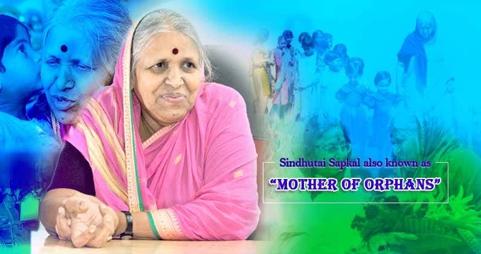

Sindhutai Sapkal
14th November 1948 - 4th January 2022

a woman of courage and valour,
a mother of orphans,
a social worker who faced unprecedented ups and downs in her life.
a woman of courage and valour,
a mother of orphans,
a social worker who faced unprecedented ups and downs in her life.
About the mother of orphans
Sindhutai was born on November 14, 1948, in the village of “Pimpri Meghe” in the Wardha district of Maharashtra. Her father was called “Abhimaan Sathe” who was a Charava (herding animal).
When Sindhutai was 10 years old, she was married to Srihari Sapkal”, 30 years old. She was the mother of 3 children at the age of 20.
Sindhutai complained to the village chief’s district officer that She did not charge the villagers. To avenge their insult, Mukhiyana Srihari (Sindhutai’s husband) was instigated by the villagers to kick Sindhutai out of the house while she was 9 months pregnant.
The same night she gave birth to a girl in Tabelle (cows and buffaloes). When she went to her mother’s house, her mother refused to accept her alone (her father died, otherwise he would have kept her daughter). Sindhutai was staying with her daughter at the train station. Praying to fill her stomach and stay in the cremation at night to protect herself and her daughter.
In her fight, She realized that there are so many orphans in the country who need a mother. From that moment She decided that any orphan who came to her would become her child.
Sindhutai Sapkal, affectionately known as “Mother of Orphans”, is an Indian social worker and social activist best known for her work in educating orphaned children in India. She obtained a Ph.D. in Literature from DY Patil Institute of Technology and Research in 2016.
A Tribute to Late Sou. Sindhutai Sapkal. Maai’s extraordinary work in the field of Social Welfare benefitted more than 1500 orphans. Her life is a perfect example of how much difference can one person make.
For more information, check out Sindhutai Sapkal Mother Of Orphans on Wikipedia.